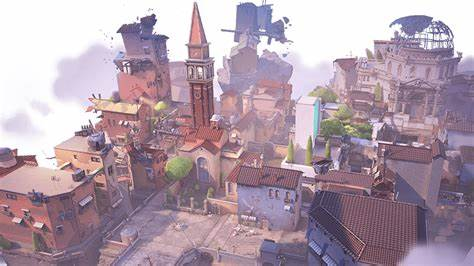

ASCENT
Ascent est une map composée de 2 sites séparés par de longs couloirs et une place centrale ouverte.La map met en avant la verticalité; en faveur des Défenseurs sur le site A, en faveur des Attaquants sur le site B.
Ascent est une map composée de 2 sites séparés par de longs couloirs et une place centrale ouverte.La map met en avant la verticalité; en faveur des Défenseurs sur le site A, en faveur des Attaquants sur le site B.